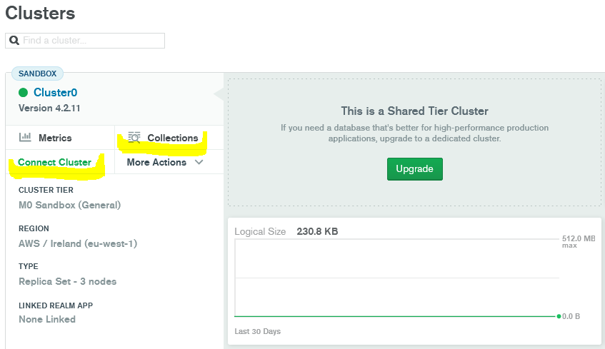
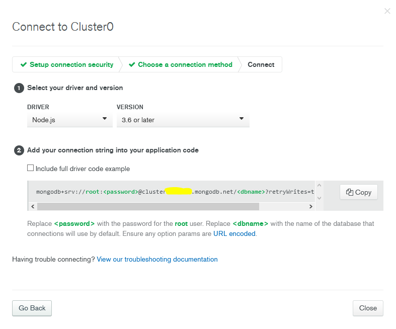
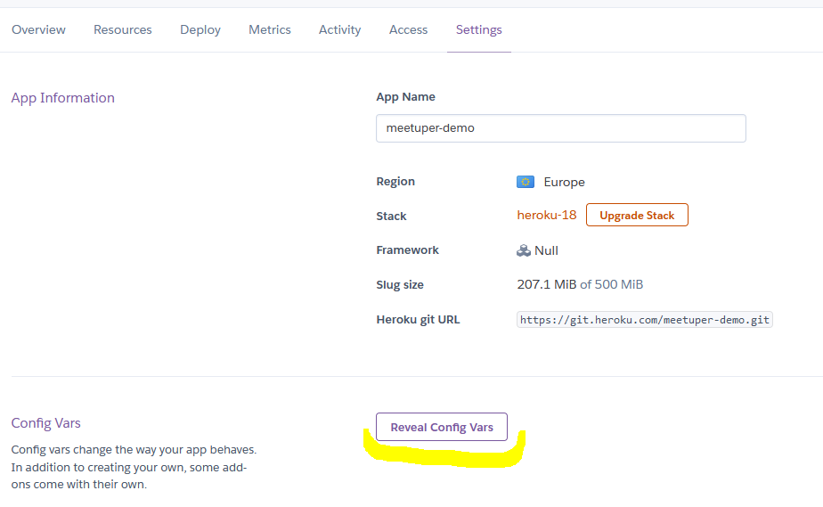
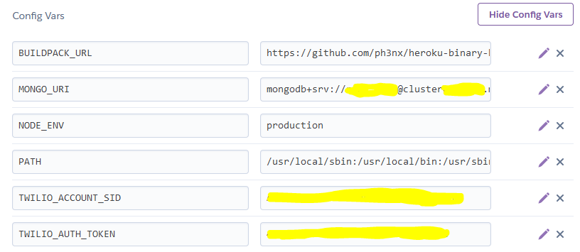
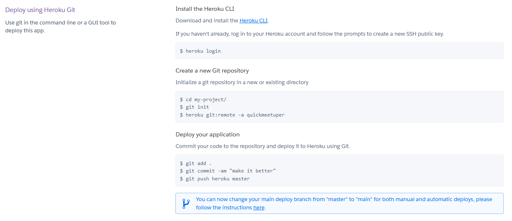
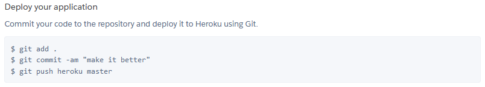

Dokumentacja
1. Pobranie plików
Pobierz plik zip poniżej. Pózniej trzeba będzie go rozpakować i wgrać na serwer.W archiwum znajdują się pliki potrzebne do uruchomienia w systemie Linux z Node 12. Dodatkowo znajduje się plik Procfile, który jest potrzebny przy uruchomieniu aplikacji na serwerze Heroku.
Poniżej przedstawimy instalację aplikacji na serwerze Heroku i przy wykorzystaniu bazy danych z https://mongodb.com.
Do uruchomienia aplikacji potrzebujemy bazę danych MongoDb, później będziemy musieli podać adres tej bazy jako zmienna środowiskowa.
2. Utworzenie darmowej bazy danych MongoDb
- Najpierw tworzymy konto wchodząc na link: https://account.mongodb.com/account/register
- Po utworzeniu konta, tworzymy darmowy klaster. Strona powinna nas pokierować.
- Czekamy, aż stworzy się klaster 
- W zakładce "Clusters" pojawi się nasz nowo stworzony klaster, klikamy w "Collections" (zaznaczono na powyższej grafice)
- Następnie tworzymy nową bazę: klikamy "Add my own data", wpisujemy nazwę: "meetuper" i nazwę kolekcji np. "test"
- Wchodzimy w zakładkę "Clusters", tam gdzie wcześniej i szukamy zielonego przycisku "Connect Cluster"(zaznaczono na powyższej grafice) i klikamy.
- Klikamy opcje: "Allow Access From Anywhere"
- Tworzymy nowego użytkownika poniżej np. o nazwie użytkownika "admin". Zapamiętujemy te dane, później będziemy musieli uzupełnić tymi danymi link do naszej bazy
- Następnie przyciskamy "Choose a connection method"
- Wybieramy metodę "Connect your application"
- Odznaczamy opcję "Include full driver code example" tak jak na poniższej grafice 
- Kopiujemy podany link podmieniając "< password>" na wpisane wcześniej hasło i "< dbname>" na nazwę bazy danych: meetuper
3. Zainstalowanie aplikacji na darmowym serwerze Heroku
- Rejestrujemy się wchodząc na link: https://signup.heroku.com/
- Tworzymy nową aplikację: "Create new app"
- Wpisujemy nazwę aplikacji i klikamy "Create app"
- Przechodzimy do zakładki "Settings", następnie klikamy przycisk "Reveal Config Vars" pokazany poniżej: 
- Dodajemy kilka wartości:
Key: NODE_ENV Value: production
Key: MONGO_URI Value: wklejamy tutaj skopiowany i uzupełniony adres bazy, którą wcześniej utworzyliśmy
Key: BUILDPACK_URL Value: https://github.com/ph3nx/heroku-binary-buildpack.git
Key: PATH Value: /usr/local/sbin:/usr/local/bin:/usr/sbin:/usr/bin:/sbin:/bin:/app/bin Ostatecznie powinno to mniej więcej tak wyglądać:  Tutaj zostały jeszcze dodane takie zmienne środowiskowe jak TWILIO_ACCOUNT_SID i TWILIO_AUTH_TOKEN. Więcej o nich w czwartym punkcie dokumentacji. Jest to potrzebne, aby kamerki działały praktycznie zawsze poprawnie. Do tego potrzebny jest zewnętrzny serwer, który ustanawia stabilne połączenie. Ta aplikacja korzysta z serwera TWILIO. Można sobie założyć konto, gdzie jest duża darmowa pula połączeń i wpisać odpowiednio jak powyżej na grafice. - Następnie przechodzimy do zakładki "Deploy" na Heroku i na początku musimy zainstalować Heroku CLI
- Jeśli uda nam sie zalogować na swoim komputerze do Heroku, przechodzimy przez kolejne punkty:

Czyli najpierw tworzymy folder o nazwie aplikacji. W konsoli przechodzimy do tego folderu i wykonujemy komende: heroku git:remote -a twoja_nazwa_aplikacji
Następnie musimy rozpakować pobrany plik meetuper.zip do utworzonego folderu. Po rozpakowaniu w tym folderze powinien być folder bin i plik Procfile - Następnie wykonujemy w tym folderze poniższe komendy: (komendy te będą się wykonywały chwilę, ponieważ wgrywane pliki są duże) 
- Jeżeli wszystko zakończy się sukcesem, powinniśmy mieć działającą aplikację. Możemy to sprawdzić wchodząc na link twoja_nazwa_aplikacji.herokuapp.com
4. Utworzenie konta TWILIO dla stabilnego działania kamerek
- Rejestrujemy się na stronie: https://twilio.com/
-
Pierwszej zakładce po zalogowaniu "Dashboard" będziemy mieć "Project info":

-
Przechodzimy do zakładki "Settings" na Heroku, klikamy "Reveal Config Vars" i dodajemy nowe pola:
Key: TWILIO_ACCOUNT_SID Value: kopiujemy wartość z Twilio ACCOUNT_SID z "Project Info" pokazanego na powyższej grafice
Key: TWILIO_AUTH_TOKEN Value: kopiujemy wartość z Twilio AUTH_TOKEN z "Project Info" pokazanego na powyższej grafice